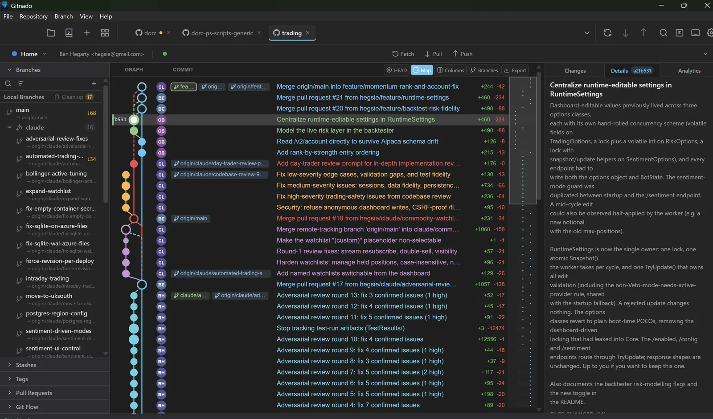

A Git client that runs on your machine,
not someone else's cloud.
Gitnado is a fast, privacy-first Git GUI. Interactive rebase, a 3-way merge editor, worktrees, GitHub/GitLab/Azure DevOps/Bitbucket integrations, and AI commit messages that can run entirely on your own GPU. No telemetry. No account. No subscription.

Everything you'd drop to the terminal for, without dropping to the terminal.
Built with Rust and libgit2 for speed on large repositories, and a UI that stays out of your way.
Privacy first
No telemetry, no analytics, no account. Network only when you fetch, pull or push. Your code never leaves your machine.
Fast on big repos
Rust backend, virtualised graph and diff rendering, background indexing. Comfortable at 100k+ commits.
Interactive rebase
Reorder, squash, fixup, edit and drop commits visually, with a preview of the result and conflict handling built in.
3-way merge editor
Base, ours and theirs side by side, chunk-by-chunk resolution, and optional AI suggestions for the tricky ones.
Local AI, your GPU
Commit messages, changelogs and conflict help from an embedded local model, Ollama or LM Studio — or bring a cloud key if you prefer.
Integrations
Pull requests, issues, releases and pipelines from GitHub, GitLab, Azure DevOps and Bitbucket. JIRA linking. An MCP server for your AI tools.
Worktrees, submodules, LFS
The advanced stuff, handled: worktree management, submodules, Git LFS, sparse checkout, bisect, reflog undo.
Diffs that read well
Syntax-highlighted diffs, hunk and line-level staging, image diffs (side-by-side, onion skin, swipe), blame, file history.
Keyboard-driven
Command palette, fuzzy switcher for branches, files and commits, vim-style navigation and fully customisable shortcuts.
Download
Installers for every release are on GitHub, or use your package manager.
macOS
Apple Silicon (M1 and later), macOS 11+
Homebrew
brew install --cask hegsie/gitnado/gitnadoWindows
64-bit, Windows 10 or later
winget · Scoop
winget install hegsie.Gitnadoscoop install https://raw.githubusercontent.com/hegsie/gitnado/main/packaging/scoop/gitnado.jsonLinux
x86_64, GTK 3.24+
Arch Linux (community, AUR)
yay -S leviathan-binGitnado updates itself in-app from signed releases. Formerly known as Leviathan — existing installs keep their settings; see the upgrade notes. Requires Git 2.20+.
System requirements
Minimum
- macOS 11 (Apple Silicon), Windows 10 64-bit, or Linux with GTK 3.24+
- 4 GB RAM (8 GB recommended for large repositories)
- 500 MB disk, plus ~2 GB if you download the local AI model
- Git 2.20 or later on your PATH
For local AI acceleration
- macOS: Apple Silicon (Metal)
- Windows / Linux: NVIDIA GPU with CUDA (GTX 1060 or better)
- Without a GPU everything still works — the model just runs on the CPU, or use Ollama, LM Studio or a cloud provider